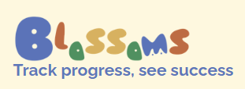
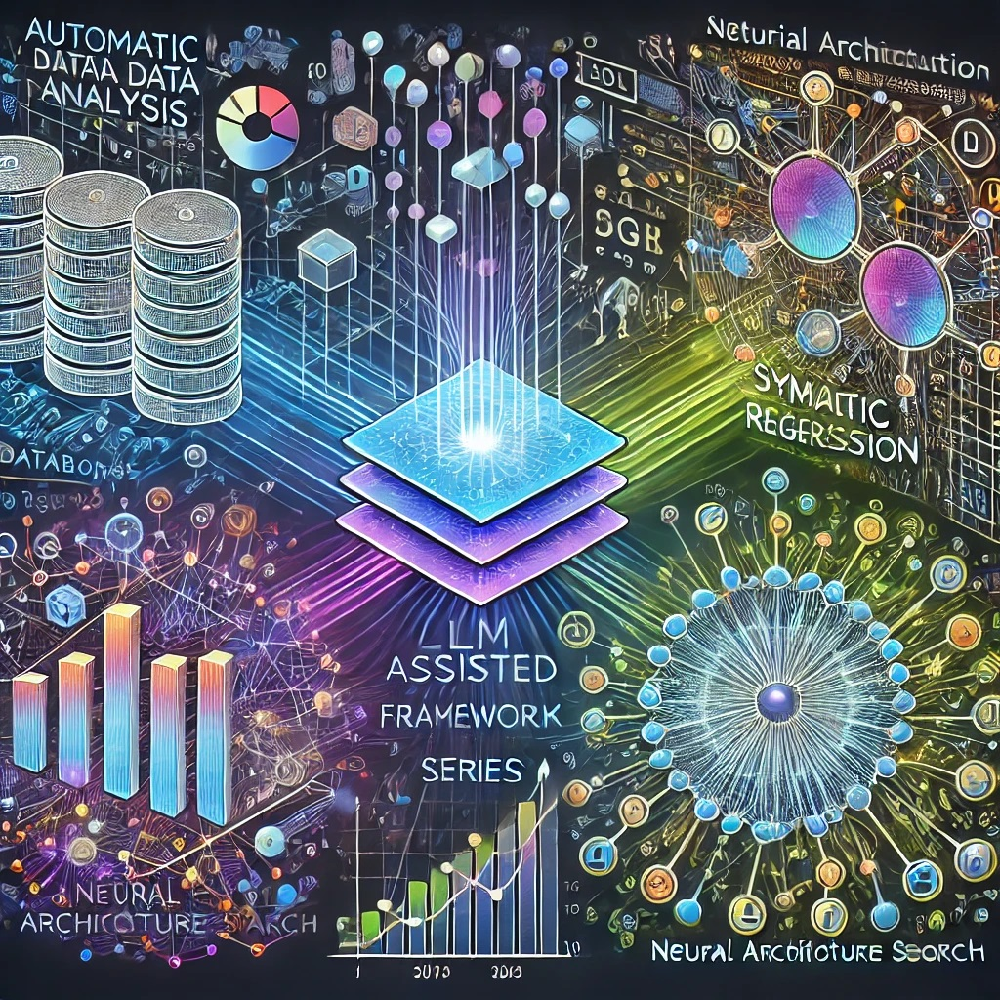

Riteng (Gavin) Zhang

I graduated from Boston College with majors in Mathematics and Computer Science, and a minor in Philosophy. Currently, I serve as the Chief AI Officer (CAIO) at Blossoms AI, an educational technology startup I co-founded. I am deeply passionate about ML/AI interpretability.
All my specific research interests listed in Section Research Interests align with my main guiding causes: first, to design AI systems that are inherently interpretable and modular, with planned, explainable behavior and capabilities. Second, I wish to develop Microscope AI Systems to assist us in other academic fields by training models and exploring the knowledge they have learned, which we don't yet know, using interpretability.
Beyond AI-related topics, my academic interests encompass history, epistemology, philosophy, theology, education, cosmology, and neuroscience. The dynamic interplay of these fields inspires helpful insights and whimsical dreams in both my industrial and academic life.
I am pursuing a PhD in the AI/ML field during the 2024/2025 application term. Please feel free to reach out.
📫 Contact Information
ritengzhang77@gmail.com
📄 My CV
🔍 Research Interests
- Mechanistic Interpretability
- Knowledge Extraction from ML Models; AI for Science
- Deep Learning Model Modularity
- Interpretability in LLM or advanced Models (Emergent Ability/Behavior)
- Formalization and Automation of Interpretable ML Systems
- Neural Architecture Search
- Transparent, Trustworthy, Robust AI; ML Safety
🏆 Awards & Achievements
- John McCarthy, S.J., Award for Natural Science (Boston College, May 2024): Awarded annually to one student for the best senior thesis (mine is Interpretability Formalizing and Automating Framework) in Natural Science, judged by dean's reviewers and administered by the Morrissey College of Arts and Sciences Dean’s Office.
- Neuhauser Award (Boston College, May 2024): Awarded annually to 1-2 students in the Computer Science department at Boston College who achieve the most recognition from all CS faculty.
- Scholar of the College (Boston College, May 2024): Awarded to exceptional students who have excelled academically and completed substantial, high-quality independent work under faculty supervision during their senior year.
🤖➕🎓 Startup - Blossoms AI

As CAIO and co-founder of Blossoms AI, I am dedicated to transforming education through artificial intelligence. Our mission is to address the shortcomings of the current education system, especially in the age of AI, and to build a new one using AI and other innovative tools. Our application is set to be deployed in several high schools and potentially colleges next semester, helping teachers increase teaching efficiency, and focus on nurturing each student's unique abilities and interests.
My roles at Blossoms AI include:
- Leading a team of 7 AI engineers (undergrads/grad students across the U.S.) to develop, test, and deploy AI products in education technology.
- Developed an Intelligent Learning Management System (LIMS) with features such as Auto-Oral Defense, Unlimited Review Quiz System, Masterlytics System, ThinkAid, and Adaptive Extra-Credit Assignment System.
- Created an AI-driven tool for automated data analysis and reporting, tailored for students, instructors, school administrators, and school districts, with personalized access levels based on user roles.
- Ensured our products are deployed in several high schools, with beta testing in progress for potential college deployment, aiming to reduce teacher workloads and improve student learning outcomes.
Researches
🧠 Neural Network Knowledge Extraction Project
The Neural Network Knowledge Extraction Project explores an emerging field at the intersection of machine learning, interpretability, and knowledge discovery. This nascent area aims to leverage techniques from interpretability, symbolic learning, and related domains to extract novel knowledge from trained neural networks - potentially uncovering insights not yet captured by human understanding. While this field is still in its infancy and lacks a formal name, it holds immense promise for advancing our understanding of AI systems and their potential to contribute to human knowledge. This project seeks to contribute to the development of this field by creating prototype techniques and frameworks, paving the way for future advancements in AI-assisted knowledge discovery and interpretation.
Papers under this project:
NN Knowledge Extraction - Potential and Challenges
This informal proposal/discussion paper aims to systematize and explore the emerging field of neural network knowledge extraction. Rather than a traditional academic paper, it serves as a comprehensive overview and roadmap for this future field. The paper discusses related areas such as interpretability, symbolic reasoning, causality, and information extraction. It presents toy experiments demonstrating potential approaches, and proposes divisions based on types of techniques used, potential outputs, and levels of abstraction in the extracted knowledge. The discussion also covers potential challenges, metrics for evaluation, and other relevant considerations for the field's development. By providing this structured exploration, the paper seeks to lay groundwork for future research and spark discussions in the AI community about the potential of extracting novel knowledge from neural networks.
Dissection of Vision Models with Vision Language Models
This paper investigates using vision-language models to dissect neural networks trained on visual data. It identifies and describes the key features detected by neurons, aiming to provide a deeper understanding of how visual models interpret and process inputs.
Neuron Dissection in Tabular Data Models
This work explores using maximally activated inputs, including both natural synthetic data, to interpret neurons in tabular data models. The study reveals the specific patterns and interactions detected by neurons, offering insights into the model's decision-making process.
Hierarchical Neural Network Dissection
This framework extends neuron-level interpretations to neuron clusters (localized groups of interconnected neurons and their associated weights), circuits, and entire models. It gradually builds understanding by using the information dissected at the neuron level, along with the weights and connection relationships between neurons. The framework aims to translate complex interactions within neural networks into human-understandable language, providing a comprehensive explanation of decision processes at multiple abstraction levels.
🌳 Branch Specialization Analysis Project
The Branch Specialization Analysis Project is a project of my own that will have several stages. Currently, it's in the very early stages with a focus on providing baseline and evaluation metrics for branch specialization consistency and exploring the potential of branch specialization in combining the functional and architectural modularity of deep learning models. Understanding and analyzing branch specialization is crucial for several reasons:
- It aids in creating more interpretable models, as it becomes clearer what roles different parts of the network are playing.
- It can lead to more efficient network designs, where unnecessary or redundant branches can be identified and pruned without loss of overall functionality.
- It provides insights that can be utilized in neural architecture search (NAS) to design optimized and task-specific models.
Papers under this project:
Analyzing Variations in Branch Attribution in Non-monolithic Models (advised by Professor Sergio Alvarez)
This paper investigates the variability in layer feature attribution across different branches in various branched neural networks (monolithic design vs. inception-like). Despite using consistent datasets, model architectures, and hyperparameters, training with different initial parameters leads to differences in neuron roles and contributions. Our focus is on determining whether the monolithic design of branched models will have higher variation in its branch attribution than that of inception-like models or non-monolithic branched neural networks.
📖 Formalizing and Automating Interpretability Framework (FAI)
Formalizing and Automating Interpretability Framework (FAI)
Inspired by interpretability survey papers like "Post-hoc Interpretability for Neural NLP: A Survey," this project introduces the Formalizing and Automating Interpretability Framework (FAI). By encoding interpretability methods into a structured, formal framework, FAI enables automatic systematization and classification, facilitates easier understanding, and allows for automation of method application. This approach establishes a unified representation that captures the essence of deep learning interpretability techniques across various dimensions, such as global vs. local, similar to previous surveys. The project also explores the possibility of generating new methods through innovative approaches, such as generative sequence models (like tree RNNs).
🔍 LLM-Assisted Framework Series

The LLM-Assisted Framework Series leverages LLMs to enhance traditional methods in various tasks:
- Bilevel Decison Making Auto Data Analysis Chatbot: A backend two-step process where LLMs first decide which predefined data analysis functions to call and provide corresponding inputs based on the database schema and user queries. Then, LLMs interpret results to determine the most insightful findings. The chatbot presents users with coherent text explanations and relevant visualizations, with chart placeholders (in Chart.js format) generated within the LLM's output for later replacement. This approach typically yields more coherent and meaningful data analysis than direct LLM-generated results.
- LLM-Guided Symbolic Regression: A bilevel optimization framework where LLMs propose formulas and parameter sets, refined through traditional optimization and LLM-based adjustments.
- LLM-Supported Neural Architecture Search: LLMs propose model architectures based on input specifications, refining them using interpretability methods and feature attribution feedback.
✈️ Travel
- ACL 2023
- NeurIPS 2023
📢 Talk
Understanding LSTM Networks, Boston College Experimental Math & ML lab, Nov 2023
📚 References
- Madsen, Andreas, Siva Reddy, and Sarath Chandar. "Post-hoc Interpretability for Neural NLP: A Survey." ACM Computing Surveys 55, no. 8 (2022): 1-42.
- Min, Sewon, et al. "Rethinking the role of demonstrations: What makes in-context learning work?" arXiv preprint arXiv:2202.12837 (2022).
- Voss, Chelsea, et al. "Branch Specialization." Distill (2021).